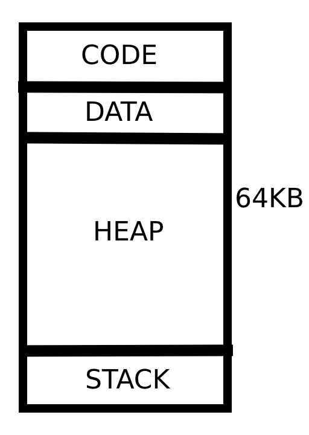

| Example | Description |
|---|---|
| namehello.S | Asks the user for a string. Then prints that string. |
| countdown.S | Asks the user for a number. Then prints a countdown from that number. |
| fibonacci.S | Asks the user for a number. Then prints that many fibonacci numbers. |
| isprime.S | Asks the user for a number. Then prints if it's prime or not prime. |
WRV is a toy. It was programmed with the hopes of providing people interested in learning RISC-V a medium to run their first test programs. My code itself (javascript and html) belongs to public domain, but this program uses also https://ace.c9.io/ files that have their own license.
The program runs in a VM of 64KB with the following organisation:  The first (4*Number of program lines) bytes are reserved for future use. Currently it's only zeros, but future versions might populate them with code. Then it comes the contents of the data sections, which currently only allows .word and .asciiz, then the heap and then the stack. The stack pointer is always initialized to the top of the 64KB.
A lot of concessions have been made to keep the project small and simple. My intention is to keep updating WRV sometime in the future. But beware of:
Print string: a0=0. a1=string addr.
Print number: a0=1. a1=number to print.
Ask the user for a number: a0=2. a1=string to ask the user. Returns the number in a0.
Ask the user for a string: a0=3. a1=string to ask the user. a2= address to store the string the user inputs.